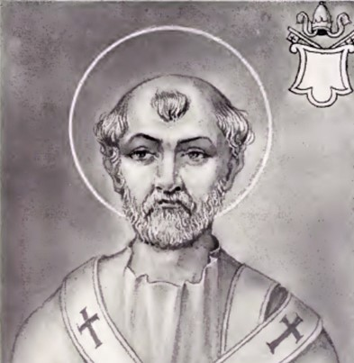

St. Telesphorus
St. Telesphorus was the seventh Roman bishop in succession from the Apostles, and, according to the testimony of St. Irenæus (Against Heresies III.3.3), suffered a glorious martyrdom. Eusebius (Church History IV.7, IV.14) places the beginning of his pontificate in the twelfth of Hadrian's reign (128-129), his death in the first year of the reign of Antoninus Pius (138-139). These statements, however, should be compared with Lightfoot, "The Apostolic Fathers", I (London, 1899), 201 sq., section on "Early Roman Successions", and Harnack, "Geschlichte der alchristl. Literatur", pt. II, "Die Chronologie", I (Leipzing, 1879), 70 sq. In the fragment of the letter of Irenæus of Lyons to Pope Victor concerning the celebration of Easter (Eusebius, Church History V.24), Telesphorus is mentioned as one of the Roman bishops who always celebrated Easter on Sunday, without, however, abandoning church fellowship with those communities that did not follow this custom. None of the statements in the "Liber pontificalis" and other authorities of a later date as to liturgical and other decisions of this pope are genuine. In the Roman Martyrology his feast is given under 5 January; the Greek Church celebrates it on 22 February.
Kirsch, J.P. (1912). Pope St. Telesphorus. In The Catholic Encyclopedia. New York: Robert Appleton Company. Retrieved April 26, 2010 from New Advent: http://www.newadvent.org/cathen/14477b.htm